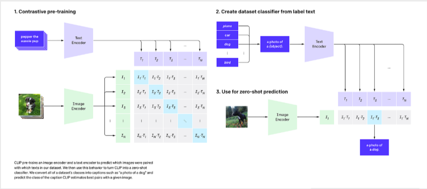

💡 Approach: We utilize Contrastive Language-Image Pre-training (CLIP) to perform classification without traditional retraining, applying an aggregated Text Prototype method for Few-shot capabilities.

CLIP uses dual encoders (a Vision Transformer for images and a Text Transformer for captions) to map both modalities into a shared high-dimensional embedding space.
🔄 End-to-End Forward Pass & Prototype Creation
Below is the specialized data pipeline showing how multiple captions are averaged into a single text prototype for robust classification. Note that tensor dimensions heavily depend on the specific CLIP backbone used (denoted as Res for input resolution and D_feat for feature dimension).
Inputs
Image (1, 3, H, W)
Captions (N_caps, 77)
➔
Encoders
Preprocessor + ViT/RN
Text Transformer
➔
Mean Aggregation
Img Feat (1, D_feat)
Mean(Txt Feat) ➔ (5, D_feat)
➔
Cosine Similarity
Logits (1, 5)
1. Image Preprocessing & Encoding
Original images with highly variable sizes (H, W) are first resized and center-cropped to a fixed resolution (Res, Res) specific to the chosen backbone. The Image Encoder then extracts an L2-normalized feature vector of size D_feat.
| Backbone Model |
Input Resolution (Res) |
Feature Dimension (D_feat) |
| ViT-B/32 & ViT-B/16 |
224 x 224 |
512 |
| ViT-L/14 |
224 x 224 |
768 |
| ViT-L/14@336px |
336 x 336 |
768 |
| RN50 |
224 x 224 |
1024 |
| RN50x4 |
288 x 288 |
640 |
| RN50x16 |
384 x 384 |
768 |
2. Text Prototype Aggregation (The Few-Shot Core)
Instead of matching against a single zero-shot prompt ("a photo of a {animal}"), the few-shot model processes all available captions for a class. The text features are normalized, averaged together (Mean Aggregation), and normalized again to form a single, robust Class Prototype vector (5, D_feat).
# Create an aggregated representative vector for a class
for c in classes:
# Extract and normalize text features for all captions of class c
outputs = model.get_text_features(**inputs)
text_features = outputs / outputs.norm(dim=-1, keepdim=True)
# Aggregate N vectors into 1 single prototype via Mean
class_vector_aggregated = torch.mean(all_text_features, dim=0)
# Final normalization of the prototype
class_vector_final = class_vector_aggregated / class_vector_aggregated.norm(dim=-1, keepdim=True)
class_vectors[c] = class_vector_final
3. Classification via Similarity
When predicting a new image, its extracted feature vector (1, D_feat) is compared against the 5 pre-computed aggregated text prototypes using dot product (Cosine Similarity). The class with the highest similarity score is chosen.